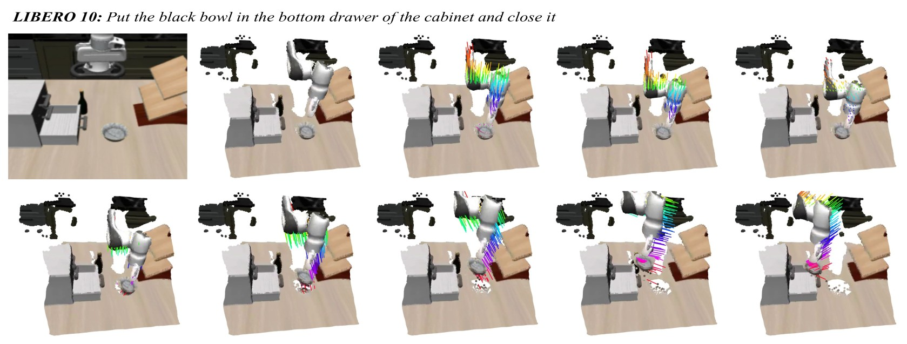
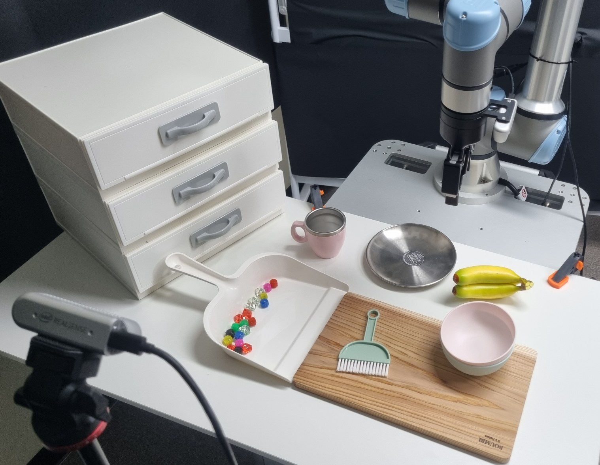
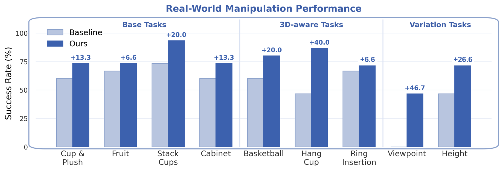

CoRL 2026 · Accepted
FlowVLA
Enabling World Dynamics Understanding
through Pluggable 3D Flow Learning
1 Abstract
FlowVLA is a reconstruction-guided, pluggable 3D flow learning framework that uses temporally aligned 3D flow from RGB observations only during training to help Vision-Language-Action (VLA) models learn action-relevant dynamics. Under dual-level flow supervision, point-level flow guides the model to forecast future displacements of task-critical 3D points, while TCP-level flow aggregates these motions to align with the robot’s Tool-Center-Point (TCP) trajectories, coupling scene-level motion with precise control signals. Extensive evaluations across simulation and real-world experiments demonstrate that FlowVLA consistently improves manipulation performance, zero-shot robustness, and data efficiency; it discards lightweight auxiliary heads at inference and introduces no additional 3D sensor inputs, inference-time architectural modifications, or additional inference-time computation.
2 Method
We adopt VDPM, a model intended to recover temporally consistent 3D point trajectories from RGB observations, to obtain a 3D motion signal without any other sensors. Here, “world dynamics” denotes manipulation-relevant 3D scene motion, not general causal or physical understanding of forces or contact mechanics. Before constructing flow targets, all 3D points are expressed in the robot base coordinate to ensure that the reconstruction-derived point trajectories are directly comparable with robot motion. Since not all points contribute equally to action-relevant dynamics, we prioritize the selection of dynamically informative points according to their motion magnitude.
The future 3D flow targets supervise the VLA with a dual-level scene-to-control objective: the action latent is encouraged by point-level flow to encode dense 3D scene motion, while motion cues are distilled into a control-oriented representation aligned with end-effector displacement by TCP-level flow. The final objective combines the action loss with the auxiliary flow losses. Critically, all auxiliary heads and 3D geometric inputs are discarded at inference. The quality of the auxiliary supervision depends on the reconstruction model. In addition, while the visualization in Appendix C.1 suggests that magnitude-based point selection tends to capture dynamically active regions, it does not explicitly guarantee task relevance.
Scroll to explore ↔View full figure

2-a VDPM Visualization
For visual clarity, we display all reconstructed points in this analysis, whereas FlowVLA uses only the top-K dynamically informative points selected by the flow magnitude during training. The visualization confirms that VDPM can recover temporally consistent 3D point motion from RGB observation sequences.
Fruit: Put the green apple in the pink bowl and put the orange in the green bowl


LIBERO-10: Put the black bowl in the bottom drawer of the cabinet and close it

3 Simulation Experiments
3-a LIBERO
Average (4 suites)
- Seer
- 87.3%
- Seer + FlowVLA
- 92.4%
- π₀.₅
- 96.8%
- π₀.₅ + FlowVLA
- 97.5%
| Method | Spatial | Object | Goal | Long | Average |
|---|---|---|---|---|---|
| Diffusion PolicyRSS 2023 | 78.3 | 92.5 | 68.3 | 50.5 | 72.4 |
| OpenVLACoRL 2024 | 84.7 | 88.4 | 79.2 | 53.7 | 76.5 |
| π₀RSS 2025 | 96.8 | 98.8 | 95.8 | 85.2 | 94.2 |
| CoT-VLACVPR 2025 | 87.5 | 91.6 | 87.6 | 69.0 | 83.9 |
| π₀-FASTRSS 2025 | 96.4 | 96.8 | 88.6 | 60.2 | 85.5 |
| SpatialVLARSS 2025 | 88.2 | 89.9 | 78.6 | 55.5 | 78.1 |
| OctoRSS 2024 | 78.9 | 85.7 | 84.6 | 51.1 | 75.1 |
| UniVLARSS 2025 | 96.5 | 96.8 | 95.6 | 92.0 | 95.2 |
| SeerICLR 2025 | 84.2 | 94.8 | 89.8 | 80.4 | 87.3 |
| Seer + FlowVLA | 93.5 | 96.5 | 91.8 | 87.8 | 92.4 |
| π₀.₅CoRL 2025 | 98.8 | 98.2 | 98.0 | 92.4 | 96.8 |
| π₀.₅ + FlowVLA | 99.0 | 98.8 | 97.4 | 94.8 | 97.5 |
3-b LIBERO-Plus
Average (7 perturbation dimensions)
- Seer
- 36.1%
- Seer + FlowVLA
- 41.1%
- π₀.₅
- 57.5%
- π₀.₅ + FlowVLA
- 59.2%
| Method | Camera | Robot | Language | Light | Background | Noise | Layout | Average |
|---|---|---|---|---|---|---|---|---|
| OpenVLACoRL 2024 | 0.8 | 3.5 | 23.0 | 8.1 | 34.8 | 15.2 | 28.5 | 15.6 |
| WorldVLAarXiv 2025 | 0.1 | 27.9 | 41.6 | 43.7 | 17.1 | 10.9 | 38.0 | 25.0 |
| UniVLARSS 2025 | 1.8 | 46.2 | 69.6 | 69.0 | 81.0 | 21.2 | 31.9 | 42.9 |
| SeerICLR 2025 | 22.1 | 47.7 | 86.3 | 12.3 | 2.0 | 22.9 | 50.0 | 36.1 |
| Seer + FlowVLA | 24.6 | 54.6 | 87.0 | 25.1 | 8.1 | 25.5 | 57.2 | 41.1 |
| π₀.₅CoRL 2025 | 21.4 | 39.1 | 68.4 | 86.7 | 83.3 | 36.1 | 84.6 | 57.5 |
| π₀.₅ + FlowVLA | 24.1 | 39.9 | 68.8 | 90.4 | 87.1 | 37.7 | 84.7 | 59.2 |
3-c Data Efficiency and Computational Cost
FlowVLA consistently outperforms the baseline across all data regimes when trained with 10%, 25%, and 50% of the full dataset.

4 Real-World Experiments
We compare Seer with and without FlowVLA on seven UR5e manipulation tasks, using third-person and wrist-view RGB observations. Each task uses 40 training demonstrations and 15 evaluation trials per policy.
4-a Setup & Tasks


- Robot
- UR5e
- Gripper
- Robotiq 2F-85
- Cameras
- 2 × RealSense D435iThird-person and wrist views
Base Tasks

3D-aware Tasks
4-b Real-World Results
Pick up the white cup and place it on top of the upside-down pink cup, then pick up the blue penguin plush toy and put it in the white cup
Open the drawer, take the orange cup out and put it on the table, then put the blue cup in the drawer and close the drawer
Pick up the red ball and place it in the basketball hoop
Pick up the white mug and hang it on the wooden mug rack
Put the blue ring on the wooden stand, then put the pink ring on the wooden stand


Scroll for all tasks
| Base tasks | 3D-aware tasks | Variations | |||||||
|---|---|---|---|---|---|---|---|---|---|
| Model | Cup & Plush | Fruit | Stack Cups | Cabinet | Basketball | Hang Cup | Ring Insertion | Basketball viewpoint | Ring height |
| Seer | 60.0 | 66.7 | 73.3 | 60.0 | 60.0 | 46.7 | 66.7 | 0.0 | 46.7 |
| Seer + FlowVLA | 73.3 | 73.3 | 93.3 | 73.3 | 80.0 | 86.7 | 73.3 | 46.7 | 73.3 |
4-c Test-time Variations
For Basketball, we adjust the angle and height of the third-person camera; the initial ring height is modified for Ring Insertion.
Different angle and height of third-person camera.
Removal of the ring support (20 mm).
4-d Real-World Results with π₀.₅
| Condition | π₀.₅ | π₀.₅ + FlowVLA |
|---|---|---|
| Basketball | 66.7 | 86.7 |
| Hang Cup | 60.0 | 93.3 |
| Basketball · Moving Background | 33.3 | 53.3 |
5 Analysis
5-a Ablation Studies
We verify the contribution of each design choice through a component ablation study performed on LIBERO-Long. Removing either TCP-level flow or point-level flow degrades performance, demonstrating that FlowVLA benefits from both scene-level motion grounding and end-effector-aligned control supervision.
Component analysis on LIBERO-Long
| Method | Avg. |
|---|---|
| None (Baseline) | 80.4 |
| w/o coordinate alignment | 86.3 |
| w/o reference-frame alignment | 85.2 |
| w/o magnitude-based selection | 84.0 |
| w/o TCP-level loss | 83.8 |
| w/o point-level loss | 84.8 |
| FlowVLA | 87.8 |
Effect of supervision signal
| Supervision Signal | Avg. |
|---|---|
| None (Baseline) | 80.4 |
| 2D optical flow (CoTracker) | 84.5 |
| Static 3D point cloud | 85.0 |
| Dynamic 3D flow (FlowVLA) | 87.8 |
5-b TCP-Level Aggregation Weight Visualization
We further visualize the learned aggregation weights of the TCP-level branch to examine how FlowVLA transfers scene-level 3D motion cues into control-relevant dynamics. Magnitude-based selection identifies K motion-salient 3D points from reconstruction-derived trajectories, and we visualize the top-512 points with the largest TCP-level aggregation weights. The TCP-level aggregation module further refines these scene-level motion cues by assigning larger weights to points around the robot TCP and object–robot interaction region.
Stack Cups
The weighted view shows the 512 highest-weight points. TCP trajectory: ground truth in black, prediction in red.
5-c 3D Object Points
The 3D points in this analysis are labeled in the MuJoCo simulator, with object categories shown as Gripper, Arm, and Others. The average object-point fraction across 100 random examples is 29.1% for all points and 84.8% for the 512 points with the highest TCP-level aggregation weights.

6 Citation
@inproceedings{go2026flowvla,
title = {FlowVLA: Enabling World Dynamics Understanding
through Pluggable 3D Flow Learning},
author = {Junhyeong Go and Mingyu Jung and Woobin Im and Jongbin Ryu},
booktitle = {Conference on Robot Learning},
year = {2026},
url = {https://mmai-laboratory.github.io/flowvla/}
}